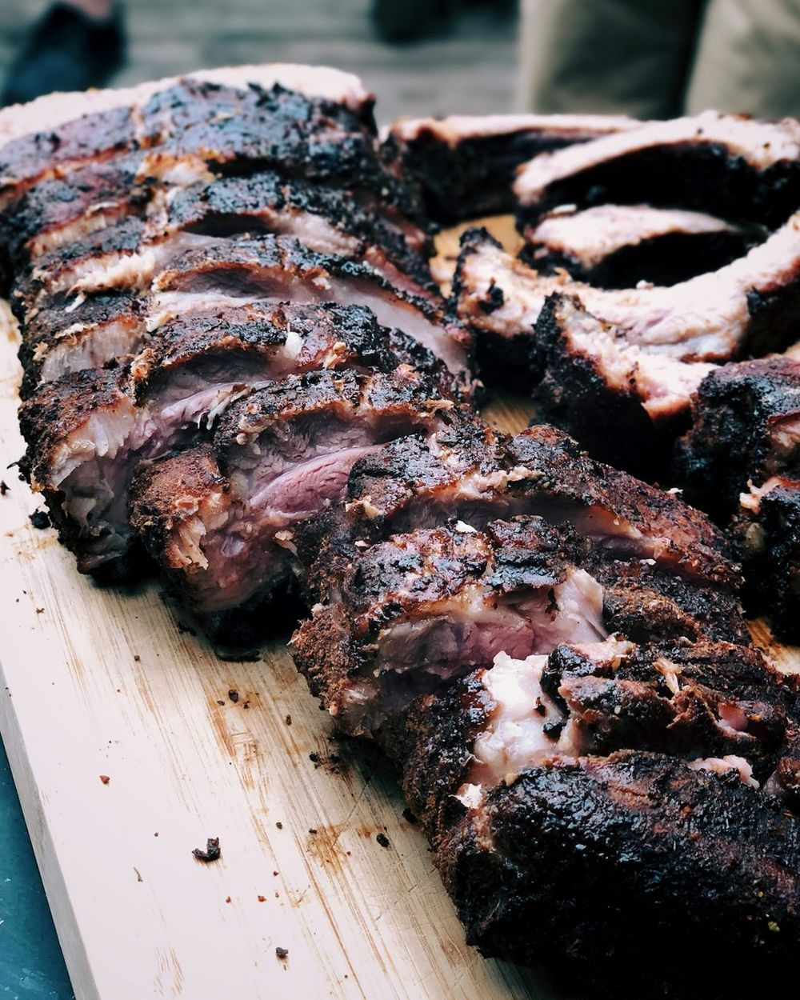
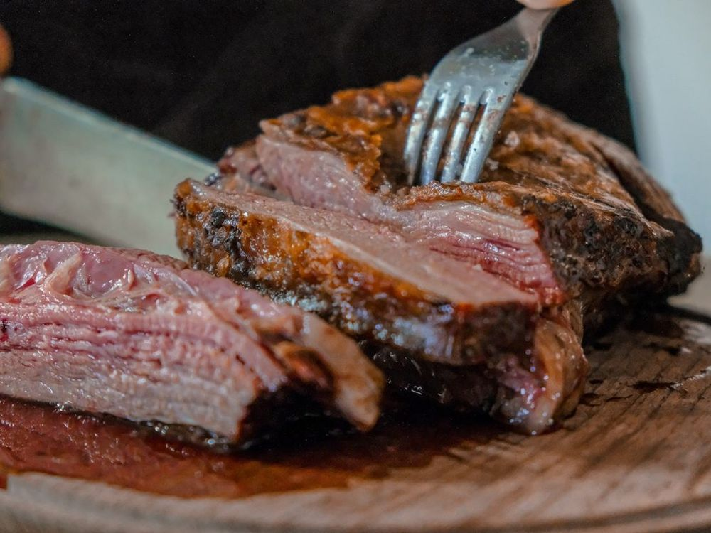
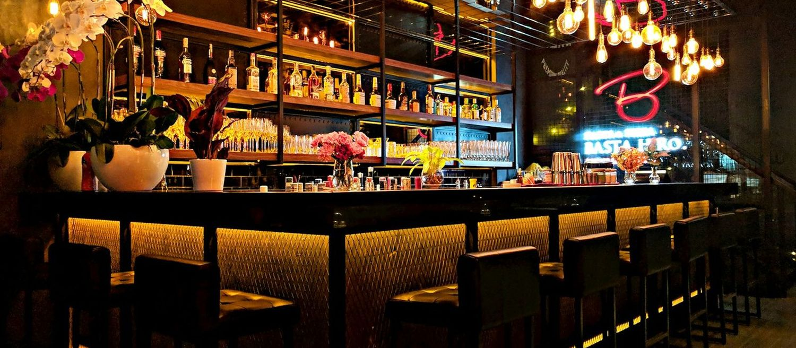
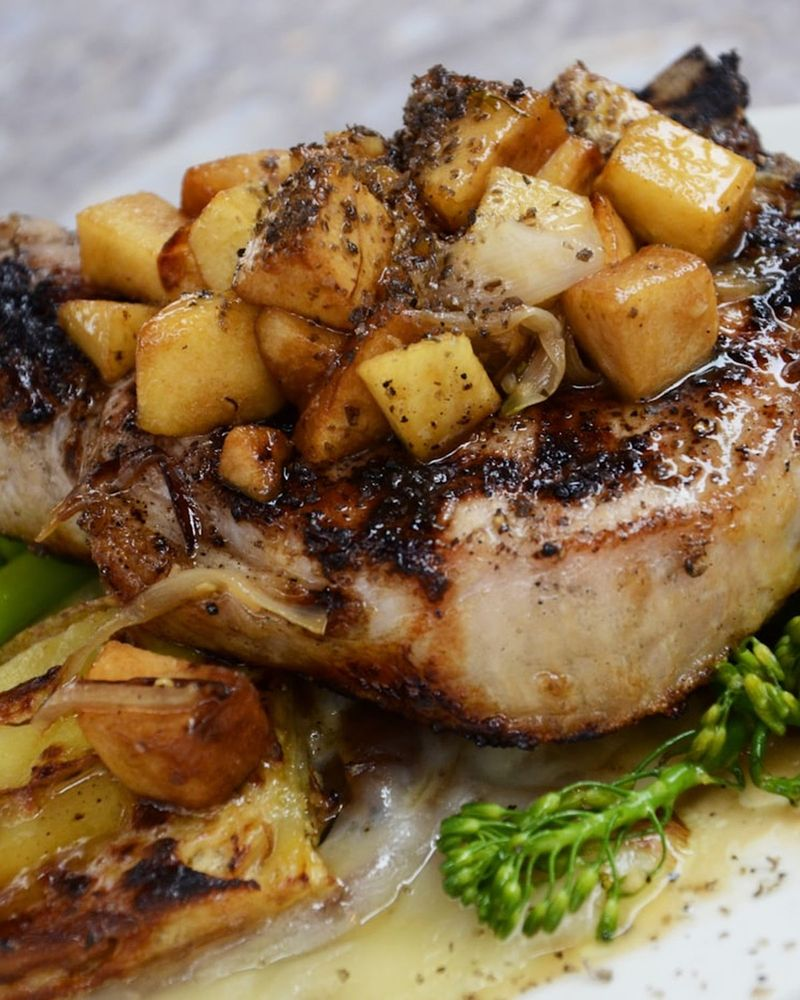
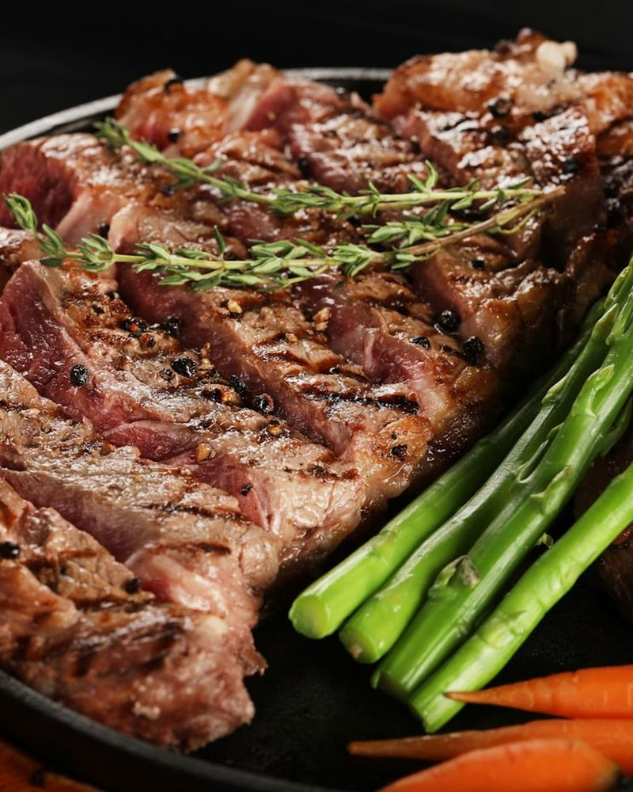
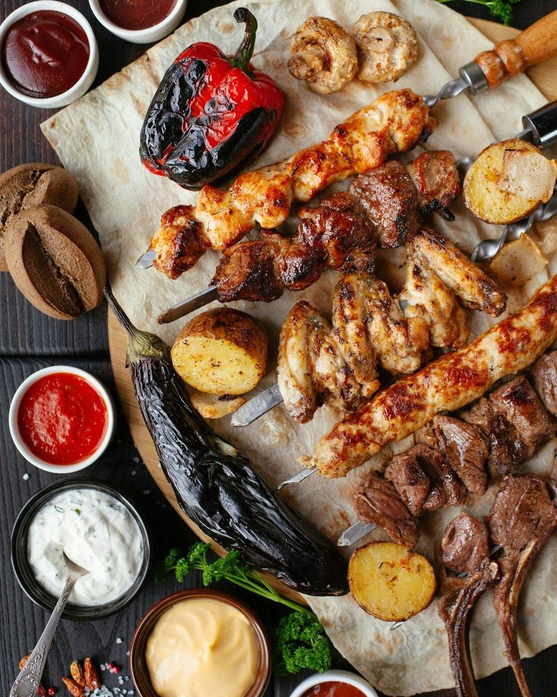
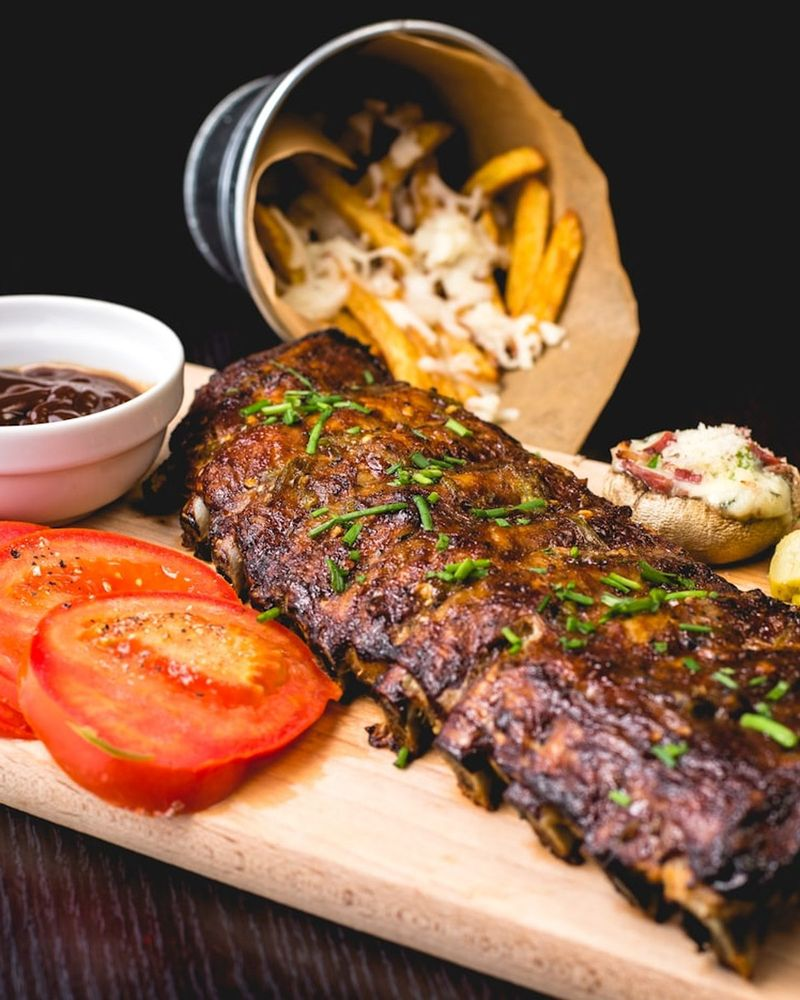
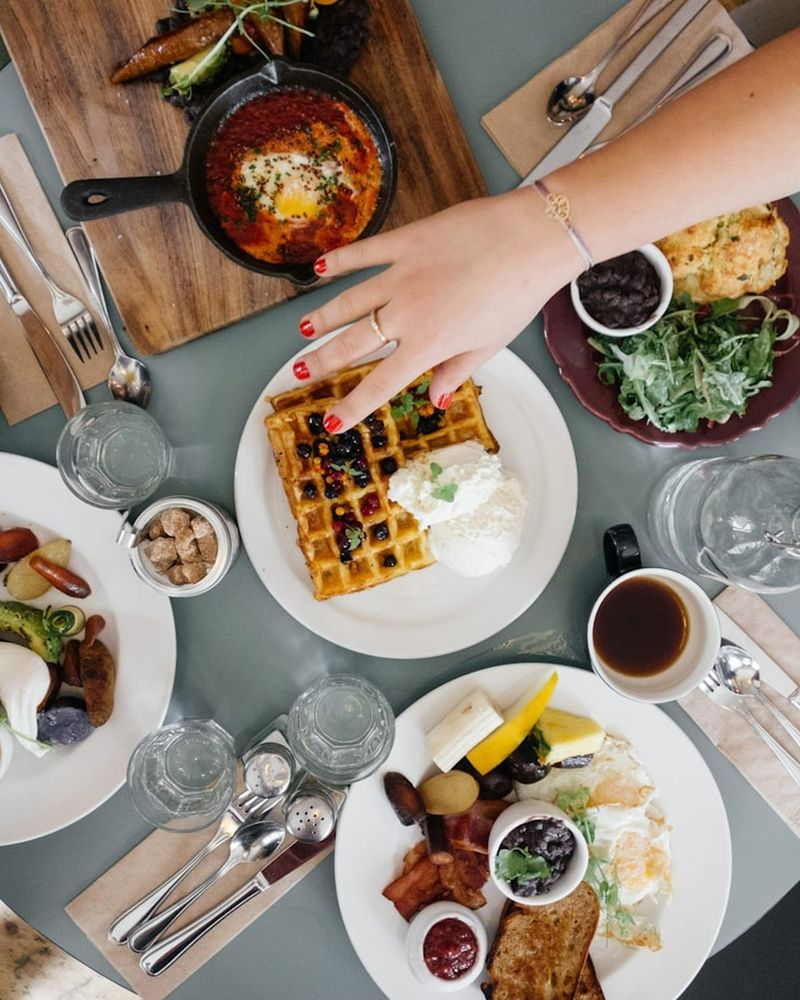
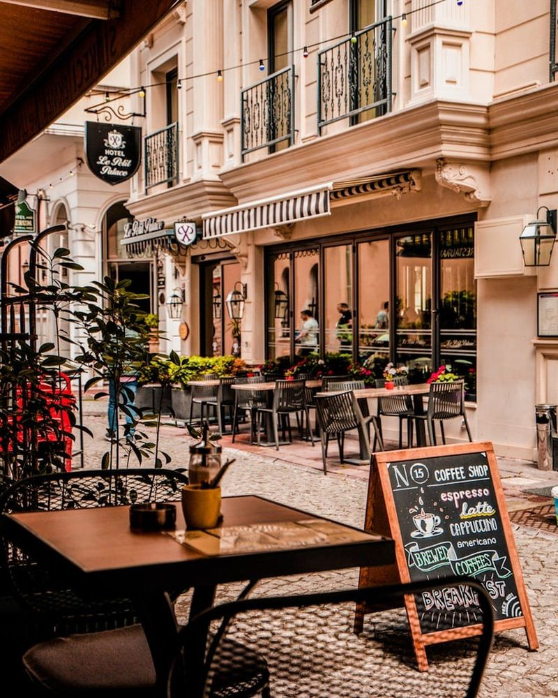

Grill & Restaurant · Junkerstraße 6, Wittingen
Vom offenen
Feuer auf
Ihren Teller.
Über glühender Holzkohle gegrillt, mit Geduld und ehrlichen Zutaten zubereitet. Saftige Steaks, knusprige Spareribs und regionale Küche — in warmem, rustikalem Ambiente mitten in Wittingen.


Unsere Küche
Echtes Feuer, ehrliche Küche — ohne Schnickschnack.
Bei uns kommt das Beste vom Grill: Fleisch über glühender Holzkohle gegart, bis es saftig auf den Teller kommt. Dazu hausgemachte Beilagen, frische Salate und das, was die Region zu bieten hat.
Wir nehmen uns Zeit — fürs Grillen und für unsere Gäste. Ein Platz zum Ankommen, gut zu essen und den Abend in Ruhe ausklingen zu lassen.
- Gegrillt über offener Holzkohle
- Frische, regionale Zutaten
- Rustikal-gemütliches Ambiente
Speisekarte
Ein Auszug von der Karte
Eine kleine Auswahl als Eindruck. Die vollständige, aktuelle Speisekarte erhalten Sie gern bei uns im Restaurant oder telefonisch.

„Ein gutes Stück Fleisch, offenes Feuer und Zeit — mehr braucht es nicht für einen Abend, an den man sich erinnert.“
Feuer vom Stein · Wittingen
Galerie
Eindrücke vom Grill
Ein paar Eindrücke von dem, was Sie bei uns erwartet. Am besten kommen Sie vorbei und probieren selbst.






Hinweis: Beispielbilder. Vor Veröffentlichung durch eigene Fotos vom Restaurant ersetzen.
Besuch & Öffnungszeiten
So finden Sie uns
-
Adresse
Junkerstraße 6
29378 Wittingen -
Telefon
05831 251068 -
Öffnungszeiten
Mo Ruhetag Di–Fr 17:30–22:00 Sa 17:00–22:30 So & Feiertage 11:30–21:00